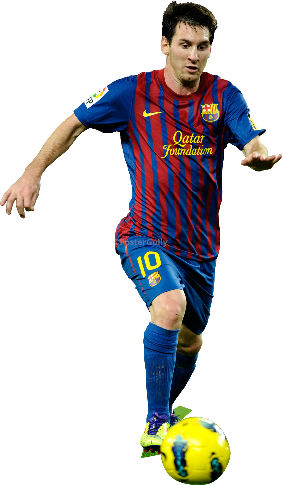
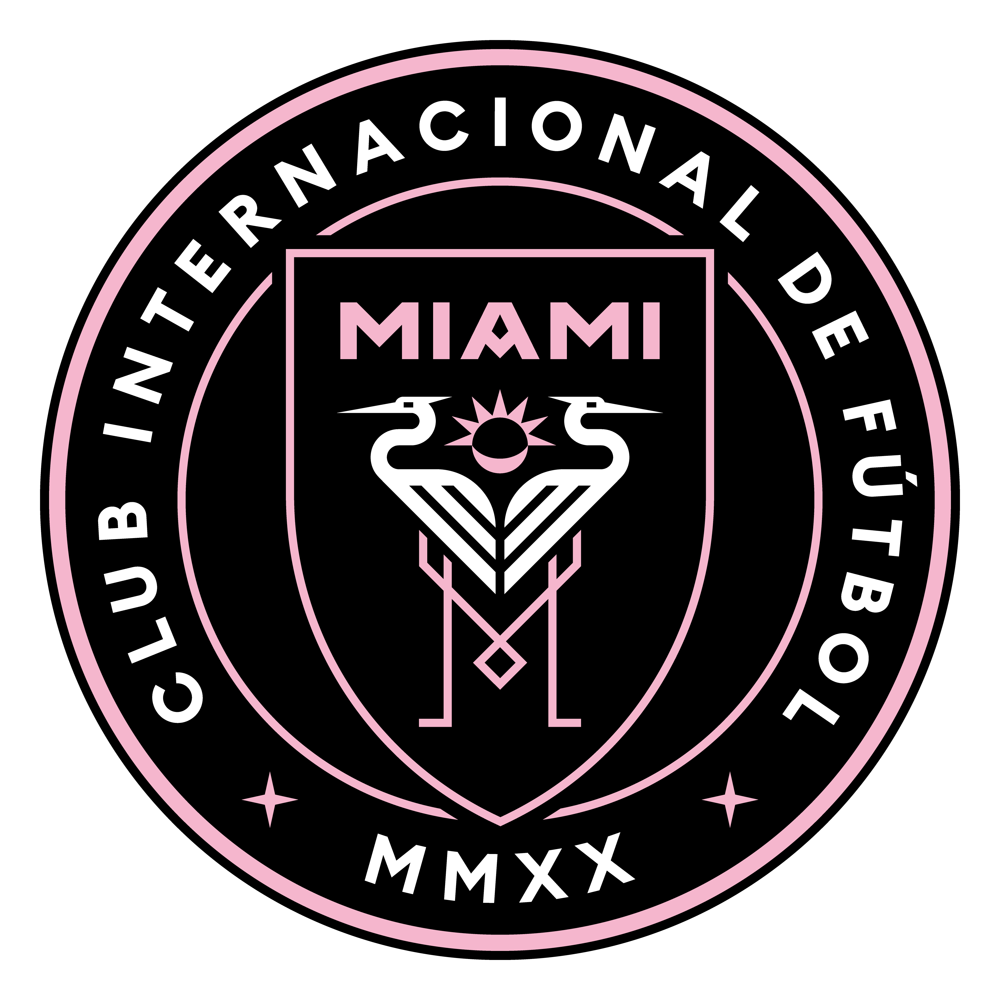
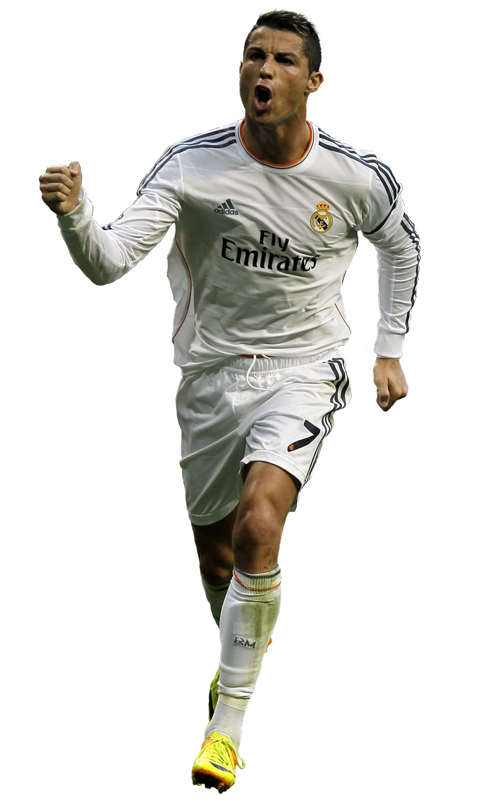
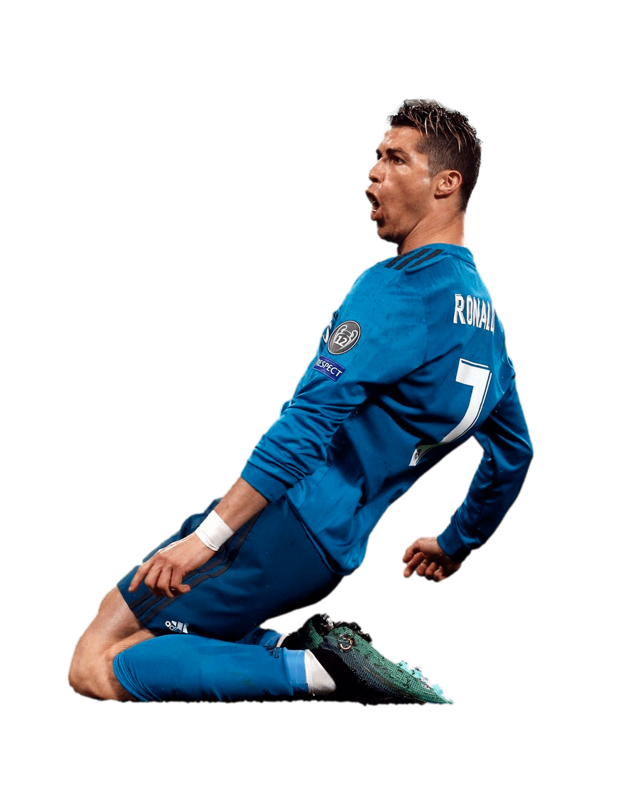

Lionel Andrés Messi, nacido en Rosario, Argentina, el 24 de junio de 1987, es considerado uno de los mejores futbolistas de la historia. Ha jugado en el FC Barcelona, PSG y actualmente en el Inter de Miami.


Cristiano Ronaldo dos Santos Aveiro, nacido en Funchal, Portugal, el 5 de febrero de 1985, ha jugado en el Sporting de Lisboa, Manchester United, Real Madrid, Juventus y Al Nassr.
